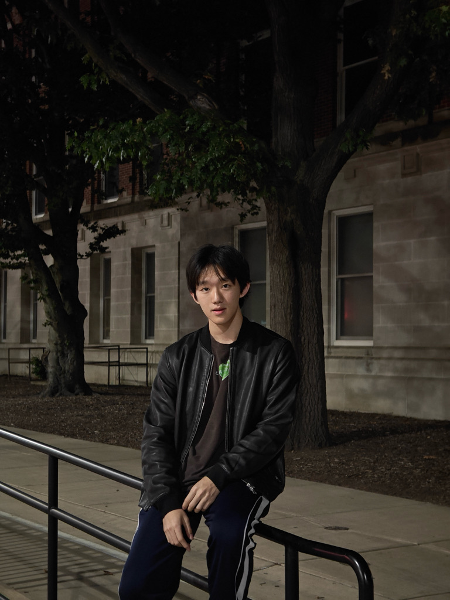

Hello, I’m
Tony Wu.
Building between systems
and stories.

I study Economics & Data Science at USC. I’ve built robotics interfaces and games, and I care about how technology feels to the people using it.
Ideas in motion.
From physical systems to digital worlds, I like making complex things tangible.
ROBOTICS / VISUALIZATIONMaking sensor data visible2026
At Daimon Robotics, I built a real-time C++ interface for visualizing robotic sensor data. I also prepared gripper datasets for tactile perception research and refined a sensing interface shown at a Shanghai AI exhibition.
GAME DESIGN / DEVELOPMENTDesigning worlds to play in2023—24
I designed two original games, including a Unity and C# 2D shooter with gameplay and narrative systems. Feedback from more than 50 beta testers shaped the balance and player experience.
Explore my earlier game archive ↗RESEARCH / CONCEPTRethinking urban parking2023—24
For the Diamond Challenge, I analyzed 120 samples on urban parking shortages and helped develop a mobile app concept through research and 3D modeling. The project advanced to the semifinal round.
BUSINESS / ANALYSISResearch for corporate clients2026
At China Construction Bank, I compiled financial and operational data for corporate client and industry reports, and researched company operations to support client meetings.
My earlier site collects games, art, and worldbuilding.
VIEW ARCHIVE ↗A little
of everything.
I’m Feiming, usually Tony. I study Economics and Data Science at the University of Southern California, and I’m drawn to the space where analytical thinking meets imagination.
Games first taught me to see technology as a way to shape experiences. Since then, I’ve worked with robotics data, explored business analysis, and kept making room for art, music, and sport.
Python, C++, C#, Java, Unity, data cleaning and visualization.
Film, photography, R&B and hip-hop, soccer, and singing bass.
Mandarin and English.
Let’s make
contact.
twu62222@usc.edu ↗Open to conversations at the intersection of technology, design, and culture.